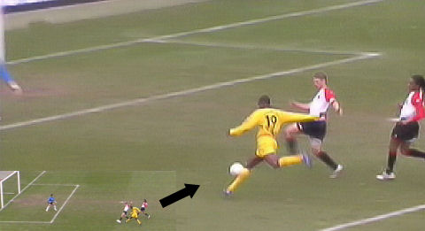

|
Feyenoord - Roda JC (1-1) 4 maart 2007
|
Weinig hoogtepunten in de eerste helft, wèl een mooie trui op de tribune.
Na een scherp aangesneden hoekschop van De Guzman kopt Bahia op doel. De
bal wordt weggestompt door Castro waarna deze scrimmage voor het doel ontstaat
waarbij Bahia andermaal een doelkans krijgt. Zijn schot wordt door Kah geblokt.
Charisteas wordt door Kah uit de wedstrijd gehouden.
Oper speelt Sibum aan die een mooi schot richting rechterhoek schiet.
De bal wordt prachtig gered door derde doelman Ekramy.
Een hoekschop van De Guzman wordt door Lucius ingekopt. Maar Agustien staat
goed opgesteld en kan de bal wegkoppen.

Dieptepass van De Fauw wordt door Cissé aangenomen die binnenschiet: 0-1, (57').
Greene kan Cissé niet afstoppen.
Buijs ontsnapt aan een tweede gele kaart als hij Sibum onderuit trekt.
Buijs wordt gewisseld voor Van Hooijdonk. Omdat Pi-air altijd tegen Roda scoort
leidt dit tot de quote van de dag: "Wanneer gaat dit konijn eindelijk in het
zuur?".
Leemans raakt de bal met de onderarm terwijl hij een beuk van Van Hooijdonk
krijgt.
Van Sichem ziet er geen strafschop in en bestraft de protesterende Van Hooijdonk
met een gele kaart.
Even later is het toch raak als de eeuwige plaaggeest van Roda de gelijkmaker
binnen kopt: 1-1, (84'). De foto's van Ego2.nl
© Koempels Pleasure Dome
|